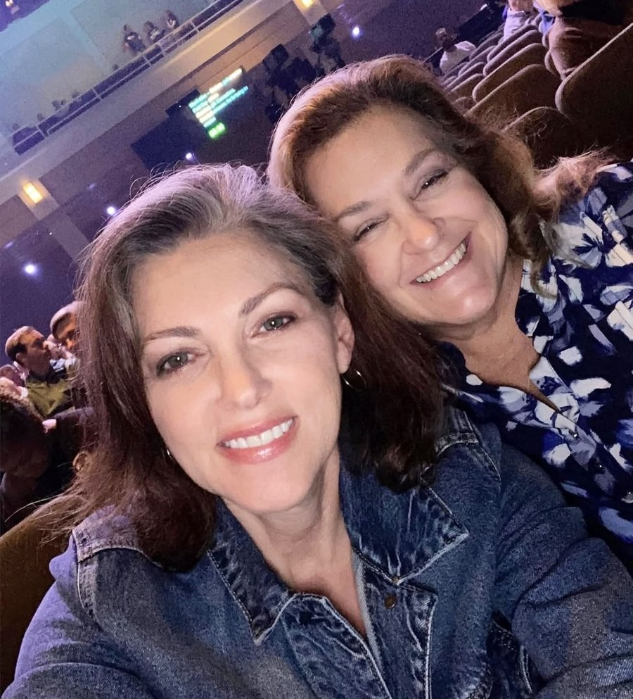

Two friends, one shared faith

We're Sheri and Kelly—two friends with different stories, a shared faith, and a heart for reminding people that God sees them.
Both of us learned early in life what it meant to experience loss. Kelly lost her father when she was just four years old, and Sheri lost her mother at nine. Our lives unfolded differently from there, but through the joys, the heartaches, the unexpected turns, and the seasons we never would have chosen for ourselves, we discovered the same beautiful truth:
God has never failed us.
We were both raised with faith as part of our lives, but over the years that faith became something much deeper and much more personal. Through every trial and every blessing, we learned to lean on Jesus. His love has carried us when we were weary, given us hope when we couldn't see what was ahead, and reminded us again and again that we never walk alone.
And somewhere along the way, gratitude grew into a desire to give that love away.
That's how The Blessing Trail began.
We don't have a grand plan for who we're supposed to meet or exactly where this trail will lead us. We simply want to travel with open eyes, open hearts, and a willingness to notice the people God places along our path.
Sometimes a blessing might be meeting a practical need. Sometimes it might be paying for a meal, lending a hand, sitting with someone who needs company, offering encouragement, or simply stopping long enough to listen and pray.
It isn't about us.
It's about showing people the love of Jesus in simple, tangible ways and reminding them that they matter—to us and, most importantly, to Him.
We believe blessings were never meant to stop with the person who receives them. So when someone becomes part of The Blessing Trail, our hope is that the kindness continues traveling long after we've gone.
Two friends. An open road. A mission to leave God's love wherever we go.
You can participate by passing a blessing along.
— Sheri & Kelly